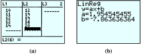
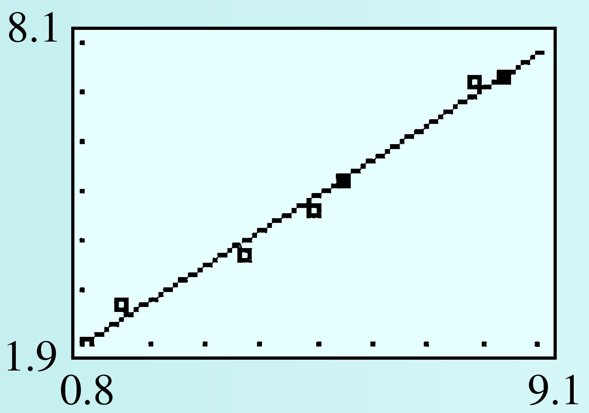

Subsection 7.4 Linear Interpolation and Extrapolation
Using a regression line to estimate values between known data points is called interpolation. Making predictions beyond the range of known data is called extrapolation.
Example 7.4.10.
- Use linear interpolation to estimate the BMI of Miss America 1960.
- Use linear extrapolation to predict the BMI of Miss America 2001.
- For 1960, we substitute \(t = 40\) into the regression equation we found in Example 7.3.8.\begin{equation*} y = 20.68 - 0.04(40) = 19.08 \end{equation*}We estimate that Miss America 1960 had a BMI of 19.08. (Her BMI was actually 18.79.)
- For 2001, we substitute \(t = 81\) into the regression equation.\begin{equation*} y = 20.68 - 0.04(81) = 17.44 \end{equation*}
Our model predicts that Miss America 2001 had a BMI of 17.44. In fact, her BMI was 20.25. By the late 1990s, public concern over the self-image of young women had led to a reversal of the trend toward ever-thinner role models.
Example 7.4.10b illustrates an important fact about extrapolation: If we try to extrapolate too far, we may get unreasonable results. For example, if we use our model to predict the BMI of Miss America 2520 (when \(t = 600\)), we get
Even if the Miss America pageant is still operating in 600 years, the winner cannot have a negative BMI. Our linear model provides a fair approximation for 1920–1990, but if we try to extrapolate too far beyond the known data, the model may no longer apply.
We can also use interpolation and extrapolation to make estimates for nonlinear functions. Sometimes a variable relationship is not linear, but a portion of its graph can be approximated by a line.
The graph at right shows a child’s height each month. The graph is not linear because her rate of growth is not constant; her growth slows down as she approaches her adult height. However, over a short time interval the graph is close to a line, and that line can be used to approximate the coordinates of points on the curve.
Checkpoint 7.4.11.
Emily was 82 centimeters tall at age 36 months and 88 centimeters tall at age 48 months.
Find a linear equation that approximates Emily's height in terms of her age over the given time interval.
Use linear interpolation to estimate Emily’s height when she was 38 months old, and extrapolate to predict her height at age 50 months.
Predict Emily's height at age 25 (300 months). Is your answer reasonable?
\(y = 64 + 0.5x\)
\(83\) cm, \(89\) cm
\(214\) cm; No
Estimating a line of best fit is a subjective process. Rather than base their estimates on such a line, statisticians often use the least squares regression line.

This regression line minimizes the sum of the squares of all the vertical distances between the data points and the corresponding points on the line, as shown at left. Many calculators are programmed to find the least squares regression line, using an algorithm that depends only on the data, not on the appearance of the graph.
Technology 7.4.12. Using a Calculator for Linear Regression.
You can use a graphing calculator to make a scatterplot, find a regression line, and graph the regression line with the data points. On the TI-83 calculator, we use the statistics mode, which you can access by pressing STAT. You will see a display that looks like figure (a) below. Choose \(1\) to \(Edit\) (enter or alter) data.

Now follow the instructions in Example 7.4.13 for using your calculator’s statistics features.
Example 7.4.13.
- Find the equation of the least squares regression line for the following data:\begin{equation*} (10, 12), (11, 14), (12, 14), (12, 16), (14, 20) \end{equation*}
- Plot the data points and the least squares regression line on the same axes.
-
We must first enter the data.
- Press
STATENTERto select \(Edit\text{.}\) - If there are data in column \(L_1\) or \(L_2\text{,}\) clear them out: Use the \(\boxed{\uparrow}\) key to select \(L_1\text{,}\) press
CLEAR, then do the same for \(L_2\text{.}\) -
Enter the \(x\)-coordinates of the data points in the \(L_1\) column and enter the \(y\)-coordinates in the \(L_2\) column, as shown in figure (a) below.
Now we are ready to find the regression equation for our data.
- Press
STAT\(\boxed{\rightarrow}\) 4 to select linear regression, or LinReg (ax + b), then pressENTER. The calculator will display the equation \(y = ax + b\) and the values for \(a\) and \(b\text{,}\) as shown in figure (b).
You should find that your regression line is approximately \(y = 1.95x - 7.86\text{.}\)
- Press
-
First, we first clear out any old definitions in the list.
- Position the cursor after \(Y_1 =\) and copy in the regression equation as follows:
- Press
VARS\(5\) \(\boxed{\rightarrow}\) \(\boxed{\rightarrow}\)ENTER. - To draw a scatterplot, press
2ndY=\(1\) and set the Plot1 menu as shown in figure (a) below. - Finally, press
ZOOM\(9\) to see the scatterplot of the data and the regression line. The graph is shown in figure (b).

Warning 7.4.14.
When you are through with the scatterplot, press Y= \(\boxed{\uparrow}\) ENTER to turn off the \(Stat Plot\text{.}\) If you neglect to do this, the calculator will continue to show the scatterplot even after you ask it to plot a new equation.
Checkpoint 7.4.15.
Use your calculator’s statistics features to find the least squares regression equation for the data in Checkpoint 7.2.5.
Plot the data and the graph of the regression equation.
\(y = 1.34 + 0.71x\)
- 